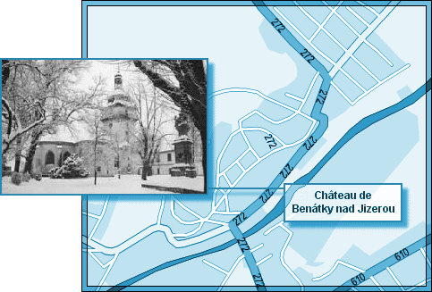
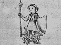

L'ICPA est une association privée créée par des amis et des collègues du journaliste Jack Lorski au lendemain de l'annonce de son meurtre en Écosse. Son seul but est d'aider les services de police et de justice internationaux à mettre fin le plus tôt possible aux agissements criminels du Phoenix.
SKL NETWORK est l'agence qui employait Jack Lorski. Elle a reçu et rendu public les deux CD-Roms envoyés par le Phoenix.
LIBERATION.FR a publié plusieurs articles sur l'affaire du Phoenix. Utilisez son moteur de recherches pour accéder à ses archives.
VICTIME N°9 : CAROLINA MOLIKOVA
- IDENTITÉ
Carolina Molikova est née en France le 6 mars 1972. Ses parents ont divorcé en 1980 ; Carolina est restée en France avec sa mère jusqu'à l'âge de 16 ans, puis elle a rejoint son père en République tchèque.
Elle travaillait pour la télévision nationale tchèque. C'est au cours d'un reportage qu'elle a rencontré Alex Borgo avec lequel elle a eu une aventure amoureuse en juillet 2001.
Elle a été comédienne amatrice dans la troupe théâtrale de Ljuba Fontanelle (l'atelier Théâtre Lanterna Magica de Prague).
Elle est devenue membre laïc de Manus Domini pour retrouver le codex 14 que son grand-oncle, Thomas Anton Malko, avait vendu au professeur Peter Volker, en 1973.
- PHOTO
- DATE ET LIEU DU CRIME
Début décembre 2002, le corps de Carolina Molikova est retrouvé par Stepan Brozik dans les caves du château de Benatky, à une trentaine de kilomètres de Prague. Elle y a été assassinée quelques jours auparavant, fin novembre 2002. - AUTOPSIE
Carolina Molikova a été poignardée. Un signe ésotérique a été marqué au fer rouge sur son front.
- ANALYSE
Carolina Molikova est la neuvième victime connue du Phoenix. Le tueur l'a d'abord choisie parce qu'elle était membre de Manus Domini, condition sine qua non de sa vengeance contre cette société secrète. On sait maintenant que Carolina n'est entré dans cette organisation que pour retrouver le codex 14 qui avait appartenu à son grand-oncle. Comme il l'a confirmé lui-même, le Phoenix n'a pas tué Carolina par erreur mais uniquement pour l'empêcher de mettre la main sur le précieux manuscrit avant lui. Pour prouver aux enquêteurs qu'il n'était pas dupe des intentions de Carolina, il a écrit avec son sang le mot "NAGHA" sur les murs de la maison située au 1 de la rue Novy Svet (quartier de Hradcany) à Prague, là où vécut Tycho Brahé ; de la même manière, il a écrit le mot "MMADI" dans la neige, près du château de Benatky. La réunion de ces deux inscriptions renvoie au codex 14 de Nag Hammadi.
Afin de respecter son rituel lié au parcours européen de son maître à penser, Giordano Bruno, le Phoenix a également choisi Carolina Molikova parce qu'elle habitait à Prague. En effet, en 1588, l'empereur Rodolphe II, mécène des astronomes - qu'il confond parfois avec des astrologues - et des alchimistes de l'Europe entière, invite le philosophe italien à Prague ; celui-ci lui dédie alors un traité contre les mathématiques. Mais son attitude toujours très controversée et ses idées sur l'infinité des mondes lui coûtent l'hostilité de l'astronome danois Tycho Brahé dont l'observatoire se trouve au château de Benatky.
Toujours en référence à son maître, le Phoenix a signé son crime en associant Carolina Molikova à Minerva (Minerve ou Athena), le cinquième principe élémentaire de la magie brunienne (De imaginum idearum compositione, 1591) :Une jeune fille à l'air héroïque aux pieds desquels deux dragons sont entrelacés, qui tient une lance dans la main droite. Dans sa main gauche cependant, elle porte un bouclier, cuirasse de chèvre sur la gorge et la poitrine. - COMMENTAIRES DU PHOENIX
• « Prague, Benatky… Neuvième sacrifiée sur la liste sacrée, Minerve n'a pas souffert. Elle s'est juste demandée qui j'étais avant de mourir… »
• « Minerve. Avec son sang, j'ai écrit la première partie du message
Près d'un château, le sang de Minerve a dessiné la Vérité dans la neige. »
• « Elle était très belle. Un regard bleu clair qui vous transperce telle Minerve avec l'une de ses flèches.
Prague, la neige, le froid.
J'ai recueilli son sang précieusement
Le sang de Minerve rend invincible… »
• « Le petit Alex semblait très attaché à Carolina.
Comme je le comprends ! Elle avait un corps de rêve…
J'ai failli presque en oublier ma Mission. »
• « Carolina s'était fait tatouer une hirondelle sur le sein.
J'ai dessiné sur son épaule un attribut plus héroïque
correspondant davantage à son rang. »
• « Alex se trompe. Carolina n'a pas été Sacrifiée par erreur… »
- DOCUMENT
• Le cd-rom blanc du Phoenix
Ce document envoyé en octobre 2004 à SKL Network raconte l'enquête d'Alex Borgo sur le meurtre de Carolina Molikova, son ex-compagne.
- LIENS
• Site de la compagnie théâtrale Lanterna Magica
• Site franco-tchèque de généalogie
• Site de RadioZakaz-Praha
• Site sur Tycho Brahé
• Site sur le château de Benatky
• Benatky-webzine.info